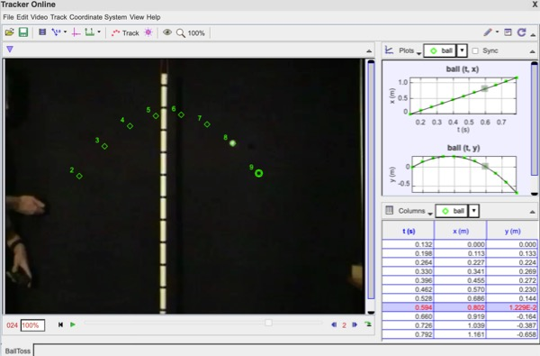

Lab Manual Contents
by Aaron Titus
The Tracker Lab Manual contains six video analysis labs.
- uniform motion
- inertial and non-inertial reference frames (Newton's first law)
- force on a person landing after a jump (Newton's second law)
- center of mass motion (collision)
- uniform circular motion of a bicycle wheel
- conservation of angular momentum of a figure skater